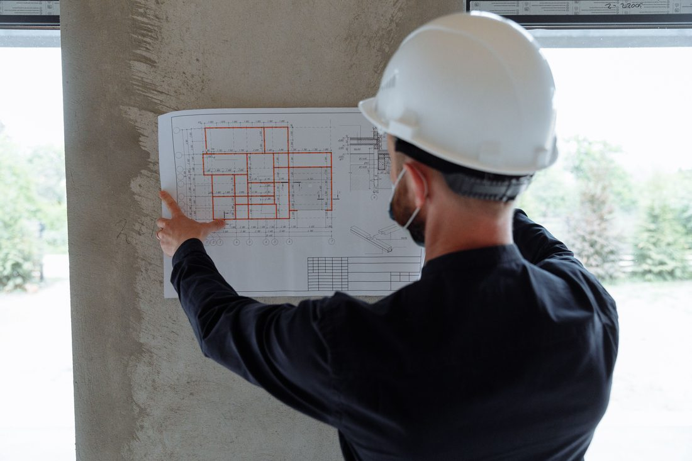
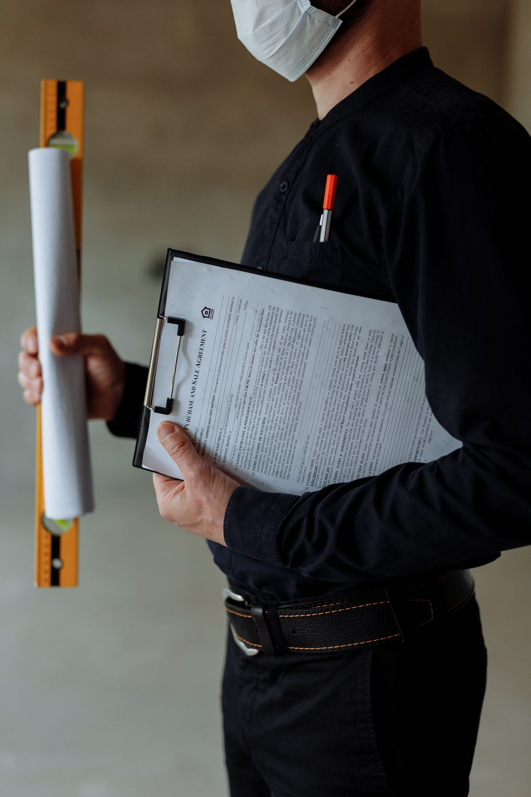
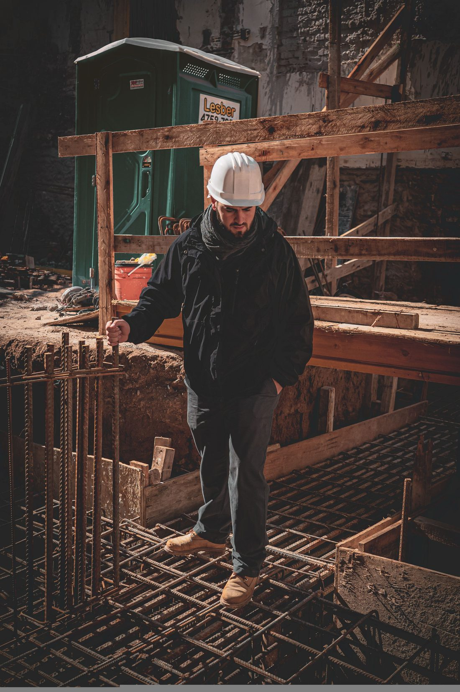

Le métier de maître d'œuvre : à quoi ça sert ?
Architecte, entrepreneur, maître d'œuvre : sur un projet de construction ou de rénovation, les rôles se ressemblent et s'y perdre est fréquent. Voici ce que fait concrètement un maître d'œuvre.
Qu'est-ce qu'un maître d'œuvre ?
Le maître d'œuvre est la personne (ou l'entreprise) qui pilote un projet de construction pour le compte du client, appelé le maître d'ouvrage. Concrètement, c'est vous qui décidez ce que vous voulez construire, et le maître d'œuvre organise tout ce qu'il faut pour que ça se fasse : conception, démarches administratives, choix des entreprises, suivi du chantier, jusqu'à la réception des travaux.
Le maître d'œuvre n'est pas celui qui pose les briques ou coule le béton : ce sont les artisans et les entreprises du bâtiment qui réalisent physiquement les travaux. Le maître d'œuvre, lui, coordonne, contrôle et engage sa responsabilité sur la bonne exécution de l'ensemble.

Les missions, de l'esquisse à la remise des clés
- Conception : traduire vos besoins et vos envies en plans, en tenant compte du terrain, du budget et des règles d'urbanisme.
- Démarches administratives : constitution et dépôt du dossier de permis de construire ou de déclaration préalable.
- Consultation des entreprises : mise en concurrence des artisans et entreprises, analyse des devis.
- Planification : organisation de l'ordre d'intervention des corps de métier (terrassement, gros œuvre, charpente, second œuvre...).
- Suivi de chantier : visites régulières, contrôle de la qualité et de l'avancement, résolution des imprévus.
- Réception des travaux : vérification finale avec le client avant la remise des clés, et suivi des éventuelles réserves.

Maître d'œuvre, architecte, entrepreneur : quelles différences ?
L'architecte conçoit un projet sur le plan architectural et esthétique ; sa signature est obligatoire au-delà d'un certain seuil de surface. Un maître d'œuvre peut travailler seul sur les projets qui ne l'exigent pas, ou en lien avec un architecte sur les autres.
L'entrepreneur général (ou une entreprise de construction) réalise directement les travaux avec ses propres équipes ou sous-traitants, et vend souvent un contrat clé en main. Le maître d'œuvre, lui, ne réalise pas les travaux : il reste du côté du client, dont il défend les intérêts face aux entreprises.
Le maître d'œuvre se situe donc entre les deux : il conçoit ou fait concevoir le projet, puis coordonne des entreprises indépendantes les unes des autres, en gardant une vision d'ensemble du chantier.
Pourquoi faire appel à un maître d'œuvre ?
Un chantier de construction ou de rénovation fait intervenir de nombreux corps de métier, dans un ordre précis et avec des délais qui s'enchaînent. Sans coordination, les erreurs de planning, les malfaçons non détectées à temps ou les dépassements de budget sont plus fréquents. Le rôle du maître d'œuvre est justement d'anticiper ces difficultés, d'avoir un interlocuteur unique tout au long du projet, et de s'assurer que chaque entreprise respecte ce qui a été convenu.

Un projet de construction en tête ?
Parlons-en sans engagement, avant même que les plans existent.
Nous contacter